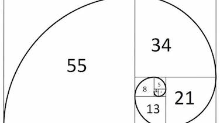

<!DOCTYPE html>
<html>
    <head>
        <title>serie di fibonacci</title>
        <link rel="stylesheet" href="stile.css">
    </head>
</html>
<body>
    <header>
        <nav>
            <ul>
                <li><a href="#">serie di Fibonacci</a>
                <ul>
                <li><a href="index.html" target="_self">fibonacci</a></li>
                <li><a href="aurea.html" target="_self">sezione aurea</a></li>
                <li><a href="loghi.html" target="_self">i loghi</a></li>
                </ul>
                </li> 
            </ul>
        </nav>
    </header>
    <br>
    <br>
    <p>
      <center><h1>la sucessione di Fibonacci</h1></center>
      <center><p>La successione di Fibonacci<br></center>
    <center>1-1-2-3-5-8-13-21-34-55-89-144-233-377-610-987<br></center>
    Questa e’ la successione di fibonacci e ogni numero successivo della serie e’ la somma dei due numeri che lo precedono.
    
    a+b/a =a/b = φ (Fi) 1,61803 </p><br>
    
    
    <p></p>Sono presenti vari esempi soprattutto in natura della serie di fibonacci come il nautilus, le galassie, le nuvole in un tornado, la cresta di un onda, la disposizione dei petali nelle rose, un uovo, un ananas, in un broccolo, annche in un girasole con le cerchie di semi che equivalgono a 34-55.
    Anche nella nostra mano e’ presente, infatti quando stringiamo il pugno otteniamo proprio questa successione (2-3-5-8). Quindi possiamo dedurre che queste forme geometriche presenti in natura non sono casuali, ognuna di esse infatti riflette un ordine e attenta progettazione.
    Questa successione numerica che crea forme cosi’ stravaganti nell’arte classica era anche visto come canone di perfezione.
    
    Curiosita’:
    Il massimo comune divisore di due numeri di Fibonacci  e’ anch’esso un numero di Fibonacci e si ha un MCD (Fm,Fn)= Fmcd(m,n) da cui si ricava che il numero di Fibonacci Fn e’ divisibile per il numero di Fibonacci Fm se e solo se N e’ divisibile per M.</p>
   
</body>
